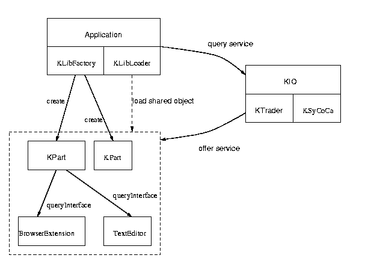
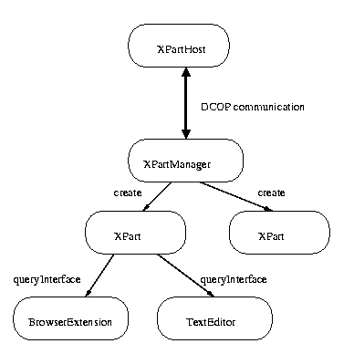
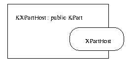
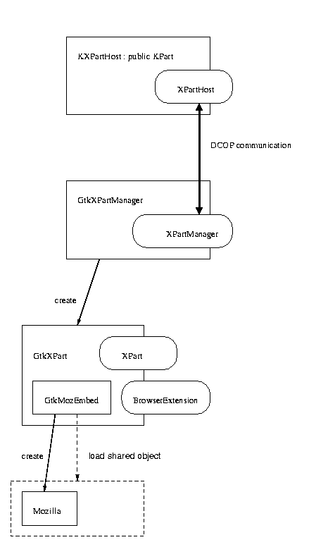
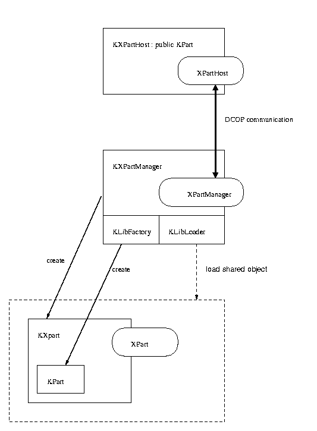

This article briefly describe the concepts, architecture and reasoning behind the XParts technology. The purpose of XParts is to extend KParts over language, toolkit, process and machine bounderies. XParts makes it possible to write KDE components with almost any toolkit or language an author prefers or to turn existing applications into KDE components quite easily.
In addition, XParts is also an important glueing technology to make KParts available in other component based systems or to utilize non-KPart components transparently as KParts.
In order to understand, what is extending about XParts, first a brief overview on how KParts work. 
Imagine an application - for example the integrated file manager "Konqueror" - wants to utilize a component that handles the "text/html" mimetype. It therefore asks the trader of the KIO subsystem whether such a service is available and where. The trader uses the system configuration cache to localize an appropriate service that fits with the user's preferences. The system configuration cache is a service type database constructed from the desktop files of a KDE setup. In the case of "text/html", the trader will very like return KDE's builtin HTML viewer dubbed KHtml. This viewer is is most certainly available as a KPart component. The application will then - via KLibLoader and KLibFactory - load the shared library object that implements the component and create a KPart instance. The LibLoader keeps track of any objects created in the loaded library and will automatically unload it after all objects have been deleted.
If the application does not only want to display HTML, but act as a full featured browser, the plain KPart interface is not sufficient. If the user clicks on a link, for example, the HTML component has to request a new URL. This kind of interaction is defined in the BrowserExtension interface. An application can query the KParts for additonal interfaces and get handles to them in case those are available. In the example case of KHtml, the BrowserExtension interface is exported. In the case of a text editor component, it's very likely that the TextEditor interface is available.
The beauty of KParts is its simplicity. It's a clean and flexible in-process approach with all its advantages:
Those advantages are unvaluable for a lightweight and tightly integrated office suite like KOffice. However, there are no silver bullets and most certainly there are drawbacks when the system is used in settings with different requirements.
Take the fourth item, it's comprehensive power while maintaining simplicity. This was one of the main requirements of the KOffice team, and it alone almost determines an in-process approach with dynamically loadable shared objects. In a generic browser like Konqueror, the requirements for integrated components are not as high as with an office suite. In an office suite, different components operate on one single document, whereas in a browser, the components basically provide different views for given Urls. To illustrate this issue, imagine how far the web came with such primitive and inflexible component technology like Netscape plugins. They did most of what people wanted to do with browser plugins, though, and so became a huge success.
To sum this up: for multi-view applications like a generic browser, there's no technical argument why out-of-process components could not be sufficient. So let's look closer at the specific advantages of such a solution.
Let's pick a concrete example. Imagine that you - for whatever reason - want to offer the Mozilla rendering engine (gecko) as KPart, so that users have an an alternative to KDE's builtin rendering engine KHtml.
The first step of such a project is to find out, whether Mozilla already is available as a reusable component that could form the basis of a KDE integration. And in fact, it is. A small library called GtkMozEmbed makes it possible to load the entire Mozilla as a single Gtk widget, i.e. the rendering engine gecko, the networking protocol implementations, the javascript interpreter and whatever else Mozilla.org comes up with. The MozEmbed library works pretty similar to KParts. Once instantiated, it dynamically loads all libraries required by Mozilla. As an interesting side note, all Unix filemanager projects that utilize Mozilla (for example the Nautilus filemanager) use this library to embed mozilla. This means you are in good company using a stock MozEmbed library, as you don't have to maintain this code but somebody else will do it for you.
Now that we have a dynamically loaded Gtk widget, how do we turn that into a KPart? Quite straight forward. There is a QGtkWidget extension available for Qt, that lets you use Gtk widgets in your Qt applications. You simply create a QGtkWidget with a pointer to the Gtk widget you get from MozEmbed and insert that into your KPart. Then you do a few trivial reimplementations of the virtual functions of the BrowserExtension interface that map to the corresponding functions of Mozilla and you are done. The result is a fully functional Konqueror that uses Mozilla as backend - or rather a fully functional Mozilla that uses Konqueror as graphical user interface, however you want to look at it.
While the skedged solution works, there are some unmentioned and ugly details. First of all, Mozilla uses the event loop of glib, while Konqueror uses Qt. Unfortunatly, mixing both event loops is not possible with the current release of glib, unless one want to end up with an application that constantly requires some CPU to run, even when being idle. While this seems to be ok for today's Java virtual machines, it's not acceptable by KDE's quality standards. Until glib 2.0 is released, you need to patch glib in order to make the QGtkWidget work properly. No big deal for most Linux users, still a hassle. And keep in mind that glib is a fairly open system. If the component was written in some other toolkit, it might be possible that glueing code is impossible to get right, without wasting at least a bit of CPU.
The second problem is Mozilla's size. It's by no means an ordinary component. In fact, it's a magnitude larger than the Konqueror framework. And since Mozilla and Konqueror do not share the same graphics toolkit, the toolkit's size has to be added to that. It seems odd to load and unload such a huge amount of code - and it can to lead to all kind of problems when trying to unload it again.
To make things worse, Mozilla wasn't even released as final version yet. While it is already quite usable, it's stability is still far from being production quality. This doesn't matter too much for a standalone browser, but can really hurt with a component. A standalone browser usually is supposed to display one web page. If it crashes, this page is gone, so the user simply tries again. With a generic browser like Konqueror, there is not just one component active at a time, but several. There might be some directory views, an embedded console, another toplevel window window, an imaged preview and much more. A crashing Mozilla would take all those component with it - and leave the user with only half of its prior desktop.
Imagine that some users define Mozilla to be the primary component to handle text/html in Konqueror. After some testing, all works well and they continue using it. A couple of days later, they might have forgotten the configuration change they did. Whenever they now hit a web page where Mozilla crashes, they will blame Konqueror. This we don't want. No code is perfect, but if a crash occurs in our code, at least it's our crash. That means, we can fix it and we can provide newer versions.
Thus, from a maintainance and support point of you, it is not acceptable for KDE to run code inprocess that is not actually maintained or controlled by the team, at least not in the default setup.
For the given reasons, it makes a lot of sense to extend KParts over process bounderies. In addition, we also win a high degree of toolkit and language independency.
To make this work, we have to identify the streamable parts of the KParts interface and offer them via some kind of middleware.
We chose KDE's native desktop middleware, the desktop communication protocol (DCOP) to establish the communication. In addition to the fact that DCOP was explicitely designed for these kind of tasks, there are some more benefits:
The following picture shows the interface structure:

The main thing that differs from KParts is the XPartHost interface that is responsible for embedding a part. The missing link now is a standard KPart component that implements the XPartHost interface. Via this KXPartHost component, it is possible to use any XPart transparently as KPart without changing a single line of code:

On the other side of the fence, we need an implementation of the XPartManager interface and can serve us with XPart interfaces. We provide this through the relatively highlevel and generic classes GtkXPartManger and GtkXPart, as shown in the next picture:

The GtkXPart is a standard Gtk widget that can have a MozEmbed widget as child widget. The only code that is necessary to write is the code used to connect the BrowserExtension interface to the corresponding functions of Mozilla.
The same technique can now be used to utilize standard KPart components in an out-of-process fashion via the XPart system. All we need is a KXPartManager that wraps standard KParts in KXParts. The KXParts then export the XPart interface. The complete structure is shown in the next picture:

Although the implementation of the external mozilla part is more a proof of concept than a finished xpart, we have shown a clean way to realize out of process components on top of KParts. It could also be shown that this approach is both language and toolkit independent.
To accomplish this task, not a single line of code in konqueror had to be changed. All we did was providing yet another independent KPart component.
By writing a small wrapper it is possible to embed any kind of visual component. In addition, we can provide generic wrappers for any kind of visual component model, as long as those models are powerful enough to describe their interfaces and GUI requirements at runtime. This includes KParts (eg. KOffice components), Bonobo components (like the Nautilus MP3 viewer) and Uno components provided by OpenOffice (formerly known as StarOffice).